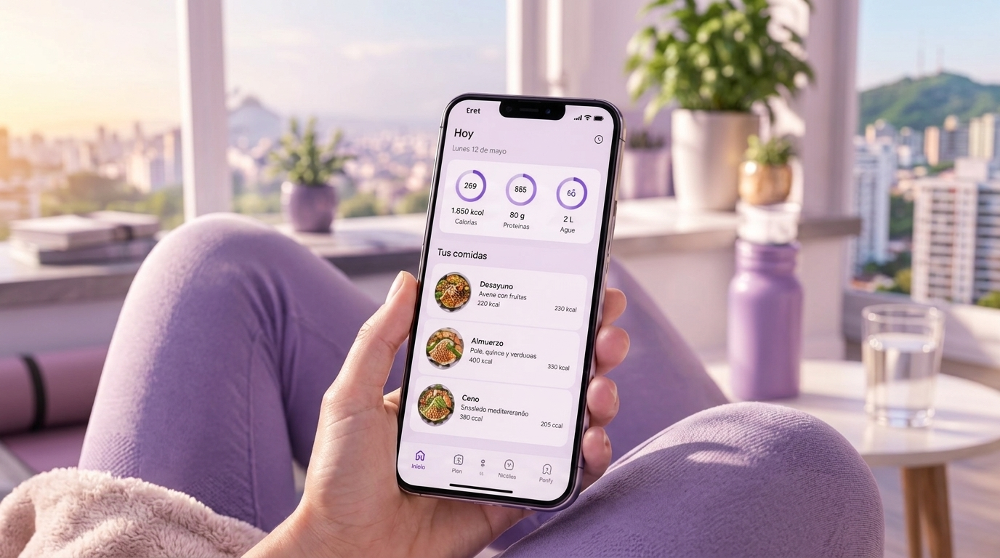

Resultados que notarás
Miles de personas ya transformaron su rutina diaria gracias a los beneficios de NutriTrack.
- VitaLab
- FitCorp
- Aura Wellness
- Pulso
- Nutrix
- VitaLab
- FitCorp
- Aura Wellness
- Pulso
- Nutrix
- VitaLab
- FitCorp
- Aura Wellness
- Pulso
- Nutrix
Por qué elegir NutriTrack
Beneficios que se sienten desde la primera semana
Cada función está diseñada para reducir la fricción de cuidar tu alimentación, no para sumarte otra carga mental.
Ahorra tiempo todos los días
Registra comidas completas en menos de 20 segundos gracias al buscador inteligente
Mejora tu energía diaria
Al equilibrar calorías, agua y macronutrientes, la mayoría de usuarios reporta menos fatiga en la tarde.
Metas que sí se sostienen
Objetivos realistas basados en tu progreso, no en promesas genéricas de "resultados en 7 días".